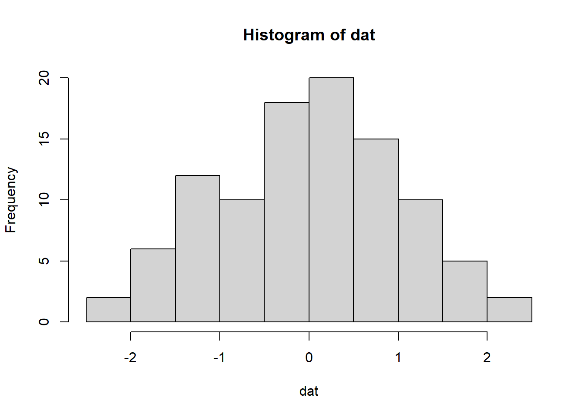
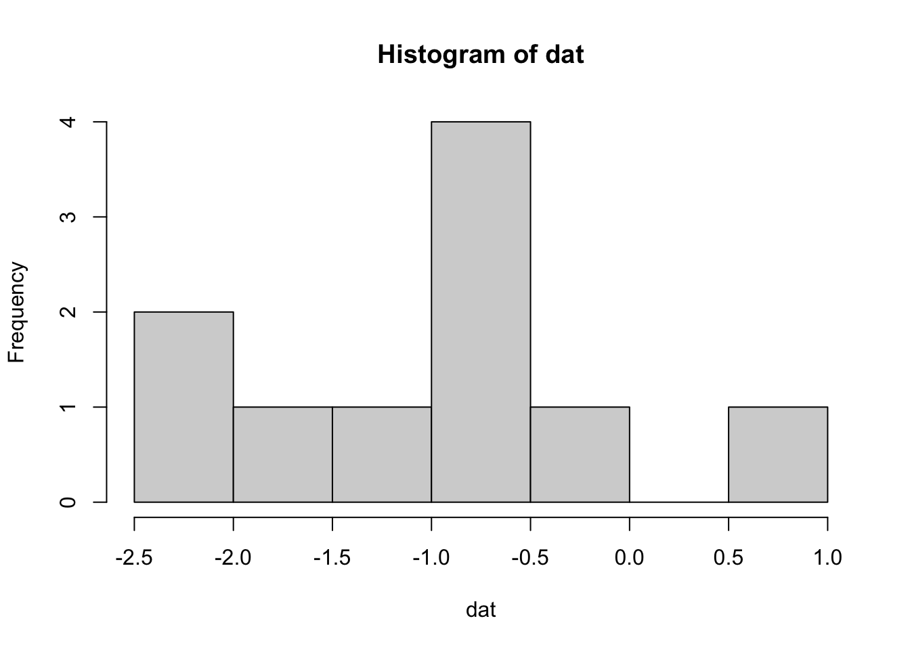

A soft introduction to Shiny
Full disclaimer: Much of this content was pillaged from the Mastering Shiny text. Please consult that text for a much more informed description of how to build shiny apps!
What is and why Shiny?
Shiny is an R package that lets you create rich, interactive web applications. Shiny lets you take an existing R script and expose it using a web browser so that you or anybody else can use it outside of R. Shiny is commonly used to:
- Communicate complex workflows to a non-technical audience with informative visualizations and interactive components
- Share your analysis easily with colleagues without having to walk them through details of your script
- Help inform your understanding of an analysis by creating a user interface to quickly evaluate
In the applied sciences world, Shiny can be a very important tool to “bridge the research-management divide”! A very simple example is the use of Shiny to replace a 500 page document with hundreds of figures with a simple application that allows the user to jump to an exact slide of the data that they want.
There are many advantages to using Shiny over other platforms for creating web applications. As R users, the beauty of Shiny is that you only need to know how to use R. You do not need to know anything about web programming, such as HTML, CSS, or JavaScript. On the other hand, Shiny gives you the power to tap into the broader suite of web programming tools when you’re ready to or have a need to expand your application.
More simply, Shiny lets you create a web interface for any R workflow. This means that whatever custom analysis or graphic you’ve made can be fully integrated into your dashboard, unlike other platforms that may have rigid and less customizable templates designed for ease of use.
New concepts
Shiny can be challenging at first because it introduces a new way of thinking about your code. “Simple” R scripts are designed to run linearly, being read from top to bottom. You write your script, source the code to your console, and get some results or objects created after running the script.
A shiny app runs from an R script, but instead of executing code linearly, it uses reactive programming that detects when an input is changed on the application, runs the minimal amount of code that uses that input, then updates the output as needed. So, rather than thinking of the script as linear, think of it as having interconnected components that share pieces of information to produce the results.
This can be daunting at first because it requires you think about which pieces of your code require inputs from other pieces and how that information is used to create output. Reactivity can be conceptualized by the building blocks of a Shiny app. Every Shiny app has the following:
- User interface (UI): Includes all inputs and outputs, as well as the appearance of the dashboard
- Server: The guts or engine of how the inputs are used to create the outputs, this is where your complicated workflow can live.
In practice, this looks like this:
library(shiny)
ui <- fluidPage()
server <- function(input, output){}
shinyApp(ui = ui, server = server)For a real Shiny app, this code would live in a standalone script. You launch the dashboard by sourcing the script or hitting the green “Run app” button on the top right.

If you run this code, you’ll see a local web browser pop up. It will be empty because this app does nothing, but this a starting point for creating your application. All we need to do is populate the ui and server objects with code to do some things.
A simple example
Now let’s make our simple example do something. As with most problems, it’s good to start with identifying where you want to go and then working backwards to figure out how to get there. Let’s end with a simple histogram to visualize some data for the normal distribution but with different sample sizes.
dat <- rnorm(100)
hist(dat)
Changing the sample size:
dat <- rnorm(10)
hist(dat)
To make a Shiny app out of this, we need to identify our inputs and our outputs. The input in this case is the sample size and the output is the plot. Inputs/outputs go in the ui object and are used by server object. Putting this into our template would look something like this:
library(shiny)
ui <- fluidPage(
numericInput('n', 'Sample size', value = 50),
plotOutput('myplot')
)
server <- function(input, output){
output$myplot <- renderPlot({
dat <- rnorm(input$n)
hist(dat)
})
}
shinyApp(ui = ui, server = server)Okay, so what is happening under the hood when you change the sample size?
- The
inputvaluenfrom theuiis sent to the server, seen asinput$n. - The
datobject is created as a random sample with sizenand then a histogram is created as output forrenderPlot - The plot output named
myplotis appended to theoutputlist of objects - The plot is then rendered on the
uiside usingplotOutputand referencing themyplotname of the object.

All of this happens each time the input values are changed, such that the output reacts to any change in the input.
There are some general rules and concepts about Shiny reactivity that are shown here that apply to any Shiny application.
All input objects are defined in the
uifile, given a name using thefooInput()function, and then referenced in theserverfile byinput$name(input$nin this case).numericInput('n', 'Sample size', value = 50)All output objects are in the server file by assigning a “rendered” object to the
outputobject byoutput$name(output$myplotin this case).output$myplot <- renderPlot({ dat <- rnorm(input$n) hist(dat) })The
uifile controls where and when the output is rendered, typically using a function namedfooOutput()that has a complementary reactive function namedrenderFoo()plotOutput('myplot')The
uifile can be declared with a function (fluidPage()here as one type of layout) with at least two inputs (one input, one output) separated by commas.The
serverfile can be declared with theserver()function where the input is evaluated as a standalone group of operations with the curly braces{}
You’re well on your way to understanding Shiny once you master the concepts demonstrated by the simple example above. Once you master the concepts, the rest is just finding the right reactive functions that do you what you need.
An overview of the standard Shiny input options is here: https://shiny.rstudio.com/gallery/widget-gallery.html
A totally non-exhaustive list of the output functions (remember renderFoo() for server, fooOutput() for ui) that you’ll most commonly use are renderPlot()/plotOutput(), renderTable()/tableOutput(), renderText()/textOutput(), and renderUI()``/uiOutput().
A better example
Last year we talked about using R to write your own functions. We started with a simple example of filtering and plotting data from the FWC Fisheries Independent Monitoring dataset.
Debugging R Shiny apps
Use the browser() but DO NOT run from the knit option.
Resources
- Mastering Shiny: By Hadley Wickham, to be published June 2021
- RStudio Shiny cheatsheet